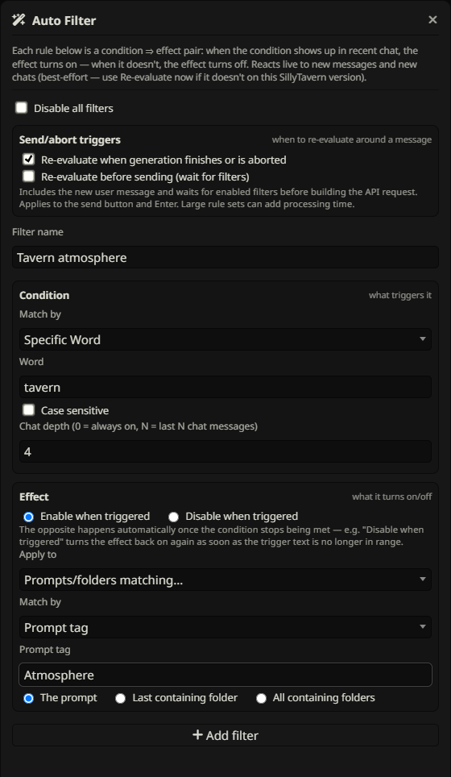
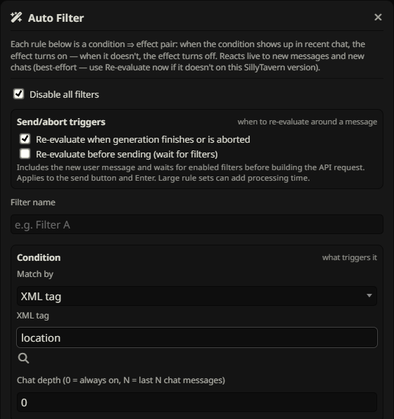
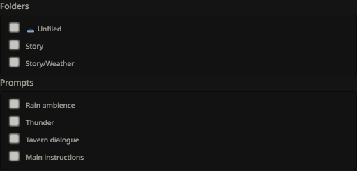
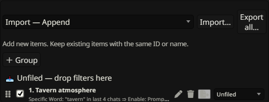
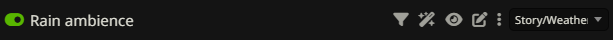

Auto Filter
Make chat conditions control prompts or folders automatically. Understand both the triggered and not-triggered outcomes before enabling a rule.
Create your first rule


- Open the toolbar wand, Auto Filter.
- Name a rule “Rain scene”. Set its condition to Word =
rainand depth to 3 recent messages. - For the effect, choose matching by Prompt tag =
Weatherand target The prompt. - Choose Enable as the action and add the filter.
- Ensure the master switch, rule and containing groups are enabled. Use Re-evaluate now.
Rain within the window enables matching Weather prompts. When the condition is not met, this Enable rule disables its current targets. Read the next sections before using folder targets or overlapping rules.
Conditions & message depth
Conditions can be Word, Regex, or XML-derived attribute values. Word is a substring match, case-insensitive by default with an optional Case sensitive checkbox. Regex is a JavaScript expression without slash delimiters, matched case-insensitively. Use \brain\b if rainfall should not count.
Depth N checks the last N chat messages, counting user and assistant messages individually, using their text. Depth 0 means always true, even without recent chat text. Increasing depth can keep a rule triggered long after the most recent reply stopped mentioning its keyword.
Use XML values as chat vocabulary


Enter a tag such as char and scan parameters from eligible prompt content. The rule searches recent chat for known attribute values, not literal XML markup. With no parameters checked, any known attribute value can match. Checked parameters with All accept any known value for that attribute; checked specific values require that value. All checked groups must be satisfied somewhere within the window.
For example, selecting name=Mira and role=healer can match those words in different recent messages. Auto Filter exclusions affect the prompt vocabulary available to scan. This differs from XML matching against prompt content, which requires selected attributes on a single tag occurrence.
Choose effect prompts & folders


The effect is independent of the condition. Select prompts by XML tag/parameters, Word, Regex, or Prompt tag, then choose The prompt, Last containing folder, or All containing folders. Alternatively use manual selection to check exact prompts and folders. Auto Filter does not offer Regex (list matched values).
Effect matching is recomputed against current active prompts each pass, respecting wand exclusions. A Prompt tag effect uses a full case-insensitive tag name. Folder targets use master mute/restore and can affect nonmatching siblings or higher ancestors. If a prompt stops matching an effect, the rule no longer controls it; that does not automatically undo its previous state.
Enable/Disable & the opposite outcome
| Rule action | Condition met | Condition not met |
|---|---|---|
| Enable | Enable current targets | Disable current targets |
| Disable | Disable current targets | Enable current targets |
The false branch sets the opposite state. It does not restore an arbitrary previous state. Folder effects preserve individual intended states through master mute/restore, so enabling a folder does not force every child prompt on.
When rules run

Rules re-evaluate on supported chat changes such as sent, received, edited, deleted or swiped messages and chat switches. The default timing also applies after generation finishes or is aborted. This changes state for subsequent use; it cannot change a request already sent.
The optional before-send waiting setting applies after the user message is added and before the prompt is built, waiting for evaluation to finish. It can make sending slower for large scans. Use Re-evaluate now for an immediate manual pass. Without before-send waiting, sending still schedules a background evaluation but does not guarantee it finishes before that outgoing request. Event integration depends on the SillyTavern version.
Execution order & conflicting rules


The numbered list is the execution order. Drag rules by their handles to change it. Enabled applicable rules run sequentially; when multiple rules affect the same prompt or folder, later writes win. This includes a rule’s not-triggered opposite action.
Groups organize and gate rules, but moving a rule into a group does not by itself change the numbered execution order. Prefer nonoverlapping effects when possible, or place the rule with final authority later.
Edit, pause, delete & group rules
Use a rule’s edit pencil to load it into the form, make changes, then Update filter. Cancel edit abandons that edit. Each rule can be switched off or deleted. Remove all clears the rule collection after confirmation. New preset group, subgroup creation, rename, collapse and Move controls organize rules.
The master switch pauses all Auto Filter processing. A disabled rule or group is skipped. Pausing or deleting does not undo effects already applied; set prompt/folder states manually if you need a different state while paused. Re-enabling makes the rule eligible for the next evaluation.
Auto Filter exclusions


The wand control on prompt and folder rows excludes them from Auto Filter. A folder exclusion is inherited by descendants; manual effect selection also respects Auto Filter eligibility. The funnel is a separate exclusion for manual Filter and presets.
An exclusion is not an override against an enclosing folder’s master mute. If another eligible prompt causes that folder to be muted, excluded contents are still suppressed. Use per-prompt targets when only directly matched prompts should change.
Import & export rules
Export a rule from its row or use Export all for its collection and groups. Choose Import — Append, Import — Replace matching, or Import — Clear and import before loading a file. These modes work like manual preset transfers and affect the Auto Filter collection, not prompt definitions.
Rule files carry criteria (including message depth), actions and group information, but not prompt definitions or assigned tags. Manually selected identifiers and folder paths must exist on the destination. Enabled imported rules may run when evaluation is scheduled; pause the master before import if you want to inspect them first, then enable and Re-evaluate now.